All 24 steps Nursery career Faron Dolls
COVERAGE_GAP 01. Reach the Castle hall Nursery career · Castle freeplay, after Chapter 2 story completion
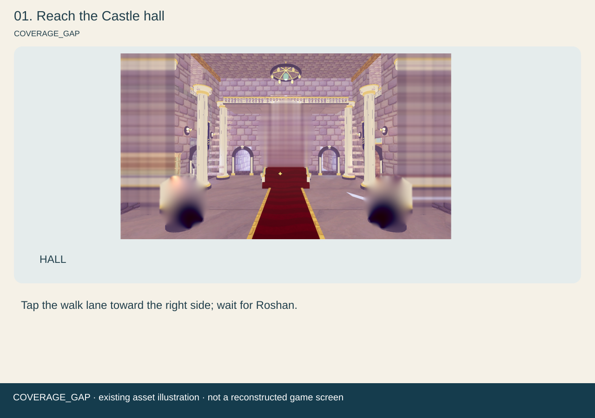
Full-size annotated panel · Untouched source artwork
One finger Tap the walk lane toward the right side; wait for Roshan. See/hear Room doors appear as the camera follows. Exact spoken entry cue/current native view missing. Before Nursery remains locked until freeplay opens. After Bubble Bath door becomes visible. R9 used two floor touches; that is not a universal requirement. Roshan/contact Roshan travels via the normal walk motor. The startup fixture does not prove fresh-save unlock; MA-PLAY-005 is the dated prerequisite finding. Next Tap Bubble Bath. COVERAGE_GAP 02. Enter Bubble Bath Nursery career · Castle room door
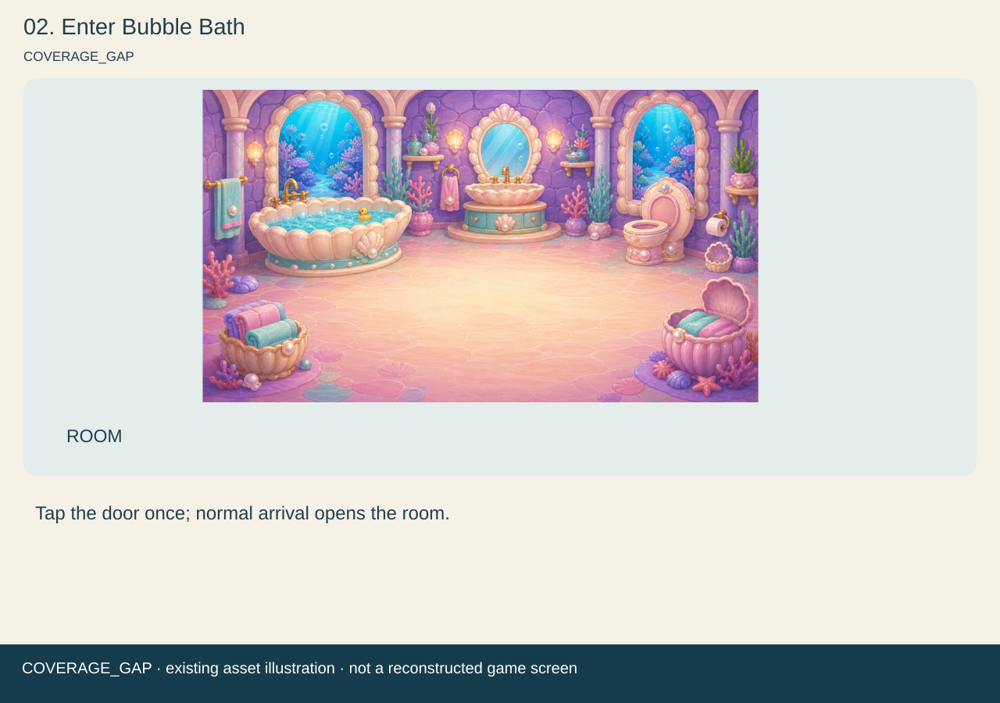
Full-size annotated panel · Untouched source artwork
One finger Tap the door once; normal arrival opens the room. See/hear Picture door/arrival cue; current native transition missing. Before Hall door visible. After Bubble Bath room exposes the Nursery card. Roshan/contact Normal Castle travel/arrival owns the transition; image here is existing room art only. Next Choose Nursery. COVERAGE_GAP 03. Choose Nursery Nurse Nursery career · Bubble Bath career rail
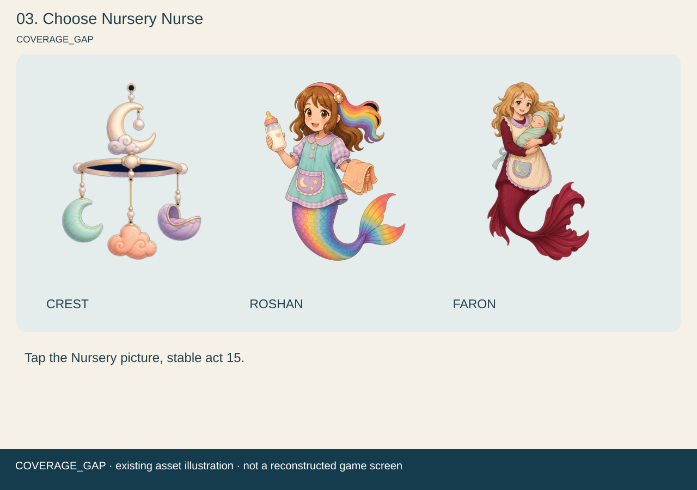
Full-size annotated panel · Untouched source artwork
One finger Tap the Nursery picture, stable act 15. See/hear Nursery crest; one finger, no confirm dialog. Before Room career rail available. After Nursery world opens with Faron and first station. Roshan/contact Approved Nursery Roshan and Faron appearances; source cards do not prove complete acting/contact. Next Tap the basin station. COVERAGE_GAP 04. Walk to the basin Nursery career · Nursery wash_basin station
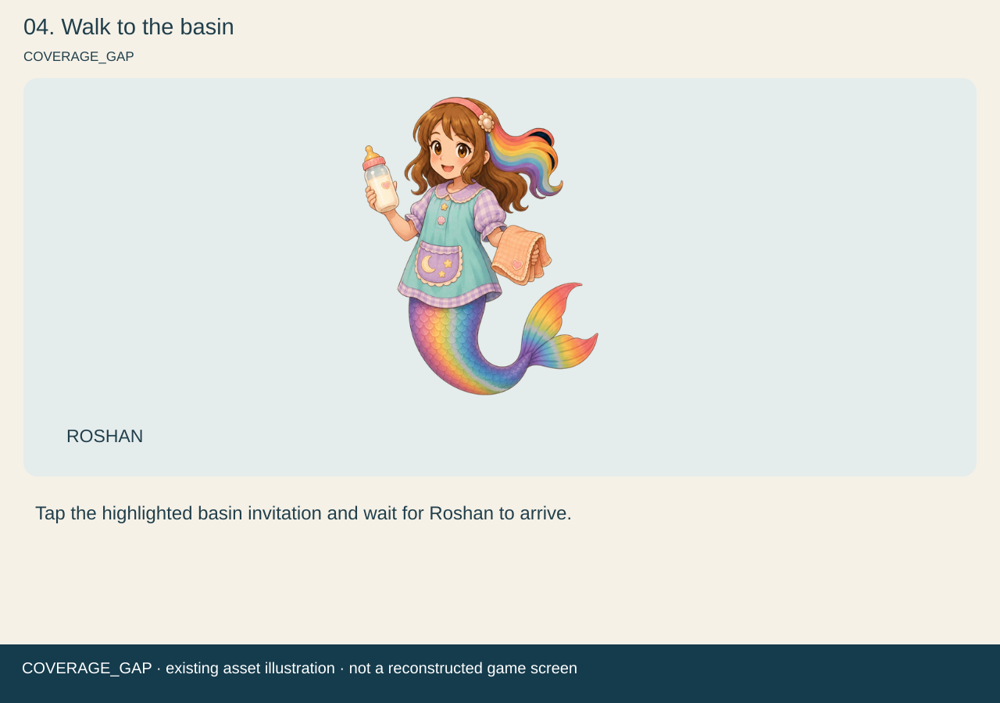
Full-size annotated panel · Untouched source artwork
One finger Tap the highlighted basin invitation and wait for Roshan to arrive. See/hear Station highlight/pointer, then wash instruction. Before WASH task closed; waiting earns no care. After WASH opens after arrival. Roshan/contact Station motor and work animation implemented; attached hand/basin contact unverified. Next Hold the wash surface. Source prompt / unmodified recording Hold the bubbly basin to wash your hands first!
Recording retained locally; not uploaded in this public package.
Prompt is source text, not a verified transcript. Playback path observed in R9; listening acceptance open.
COVERAGE_GAP 05. Hold to wash Nursery career · Nursery WASH HANDS surface
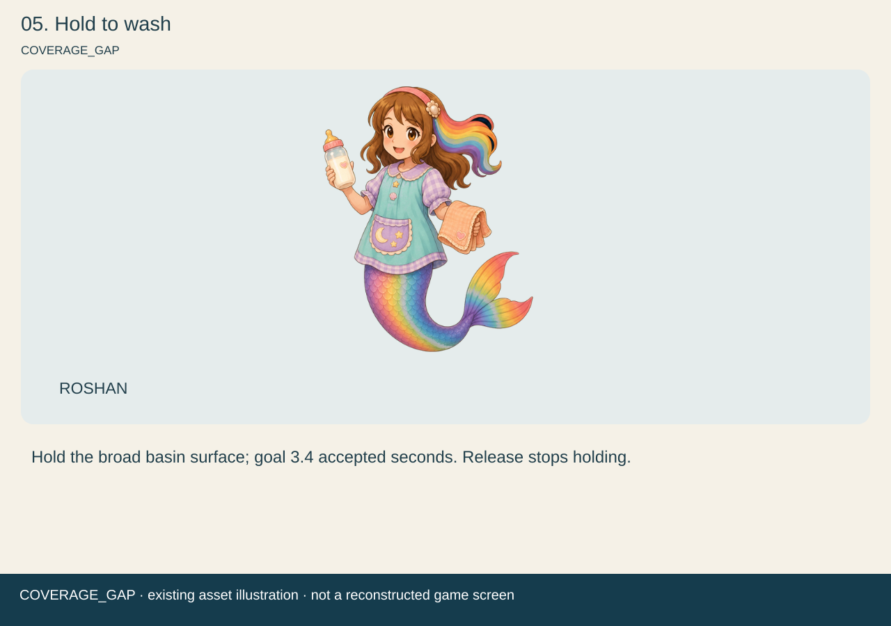
Full-size annotated panel · Untouched source artwork
One finger Hold the broad basin surface; goal 3.4 accepted seconds. Release stops holding. See/hear Basin/water/bubbles/progress; wash prompt. Before 0 wash progress; R9 passive wait earned nothing. After Wash completes and next invitation appears. Roshan/contact Procedural wash tableau/work state; whole-figure hand action remains a native review gap. Next Tap cuddle_cushions. Source prompt / unmodified recording Hold the bubbly basin to wash your hands first!
Recording retained locally; not uploaded in this public package.
Prompt is source text, not a verified transcript. Playback path observed in R9; listening acceptance open.
COVERAGE_GAP 06. Walk to the catch station Nursery career · Nursery cuddle_cushions station
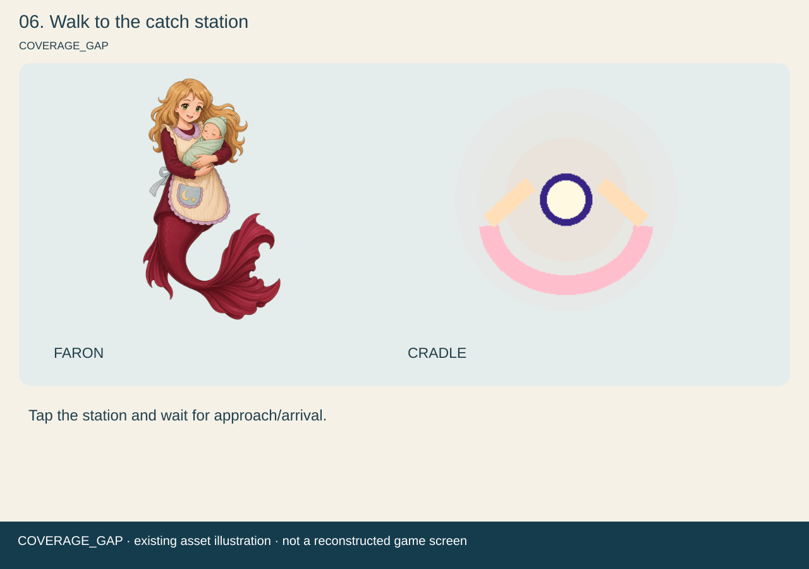
Full-size annotated panel · Untouched source artwork
One finger Tap the station and wait for approach/arrival. See/hear Highlighted station; Faron catch instruction. Before Wash complete; catch closed. After Five-catch task opens. Roshan/contact Roshan approaches; Faron is a cooperative partner. Next Slide the cradle. Source prompt / unmodified recording Slide the soft cradle under five babies. Pillows keep every miss safe!
Recording retained locally; not uploaded in this public package.
Prompt is source text, not a verified transcript. Playback path observed in R9; listening acceptance open.
COVERAGE_GAP 07. Catch five babies Nursery career · Nursery catch surface
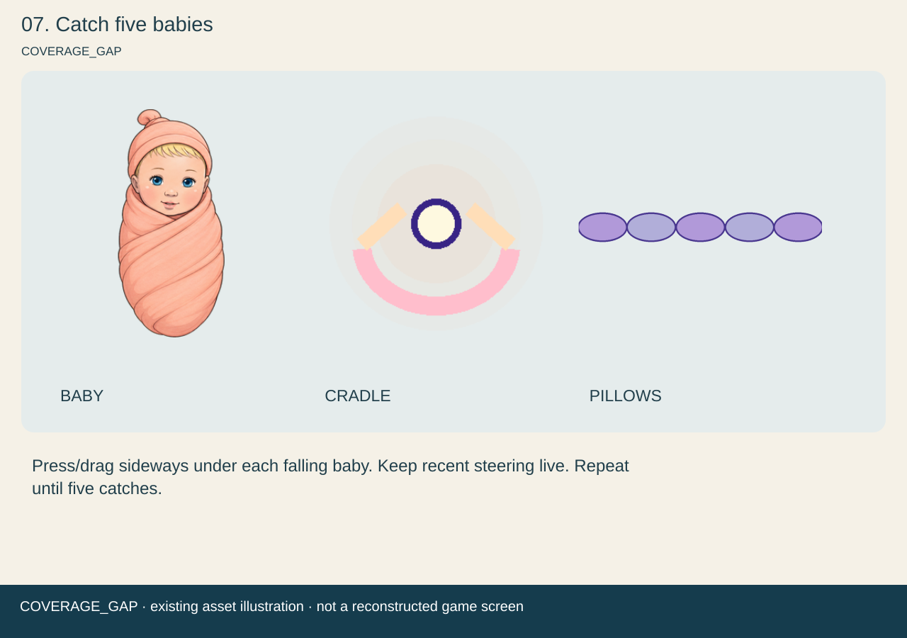
Full-size annotated panel · Untouched source artwork
One finger Press/drag sideways under each falling baby. Keep recent steering live. Repeat until five catches. See/hear Faller, broad cradle and filled picture pips. Before 0/5; up to two fallers. After One real catch adds one; five completes. Roshan/contact Cradle moves with finger x; Roshan work feedback/Faron visible. Attached arms/cradle/support need review. Next Go to the bottle nook. Source prompt / unmodified recording Slide the soft cradle under five babies. Pillows keep every miss safe!
Recording retained locally; not uploaded in this public package.
Prompt is source text, not a verified transcript. Playback path observed in R9; listening acceptance open.
COVERAGE_GAP 08. A miss stays safe Nursery career · Optional catch miss
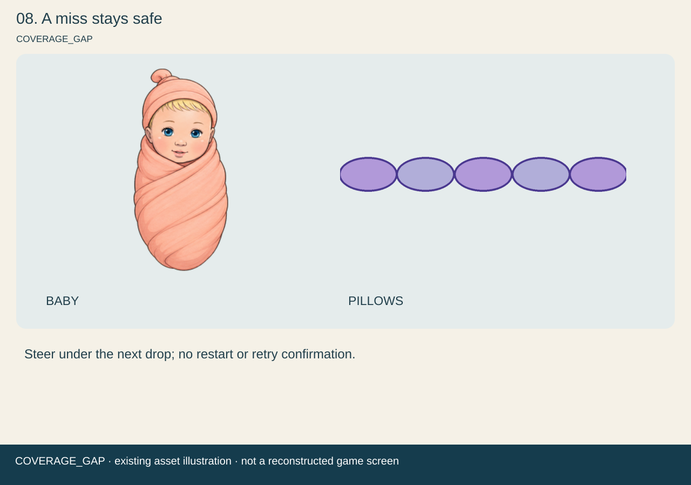
Full-size annotated panel · Untouched source artwork
One finger Steer under the next drop; no restart or retry confirmation. See/hear Pillow landing; mercy slows/recentres later drops. Before Baby passes cradle. After Caught progress stays; a miss never ends the job. No live steering means no catch credit. Roshan/contact Safe landing implemented; pillow material/cradle shape/contact remain open. Next Continue to five catches. Source prompt / unmodified recording Slide the soft cradle under five babies. Pillows keep every miss safe!
Recording retained locally; not uploaded in this public package.
Prompt is source text, not a verified transcript. Playback path observed in R9; listening acceptance open.
COVERAGE_GAP 09. Feed the babies Nursery career · Nursery bottle_nook / FEED
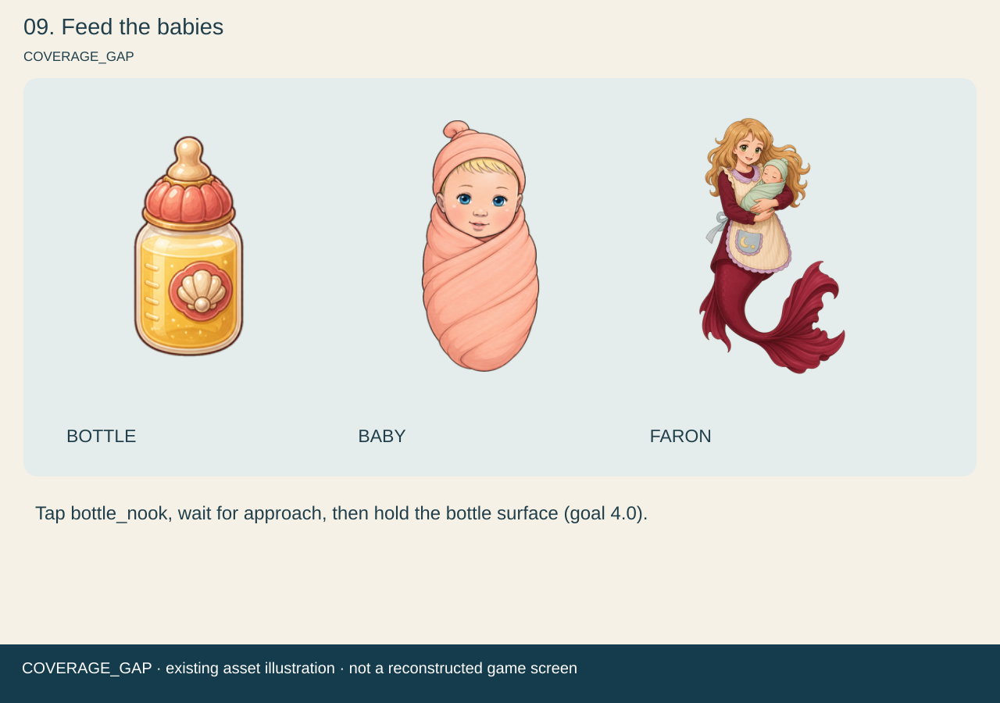
Full-size annotated panel · Untouched source artwork
One finger Tap bottle_nook, wait for approach, then hold the bottle surface (goal 4.0). See/hear Bottle moves toward three mouths; drain pip/progress. Before Catch complete; feed starts at 0. After Feed completes; pat station invited. Roshan/contact Bottle moves/tilts between babies; attached Roshan hand/feeding contact not proved. Faron remains visible. Next Tap cuddle_cushions again. Source prompt / unmodified recording Hold the warm bottle while Roshan and Faron feed each baby!
Recording retained locally; not uploaded in this public package.
Prompt is source text, not a verified transcript. Playback path observed in R9; listening acceptance open.
COVERAGE_GAP 10. Four gentle pats Nursery career · Nursery cuddle_cushions / BURP
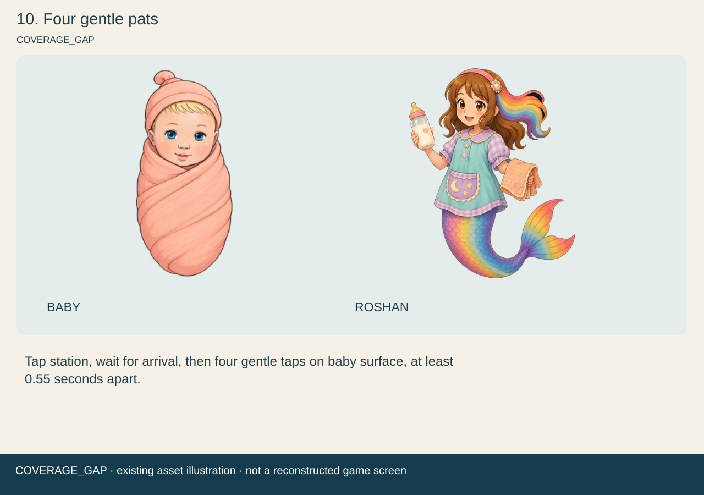
Full-size annotated panel · Untouched source artwork
One finger Tap station, wait for arrival, then four gentle taps on baby surface, at least 0.55 seconds apart. See/hear Baby/hand reaction, pips and slow-pat prompt. Before 0/4 pats. After Four paced pats complete; fast taps rehint instead of filling count. Roshan/contact Procedural hand circle, small baby deformation/reaction bubbles; attached anatomy/whole-figure acting still open. Next Tap the moon bed. Source prompt / unmodified recording Pat the baby's back gently and slowly: pat, pat, pat!
Recording retained locally; not uploaded in this public package.
Prompt is source text, not a verified transcript. Playback path observed in R9; listening acceptance open.
COVERAGE_GAP 11. Walk to the moon bed Nursery career · Nursery moon_bed / BEDTIME
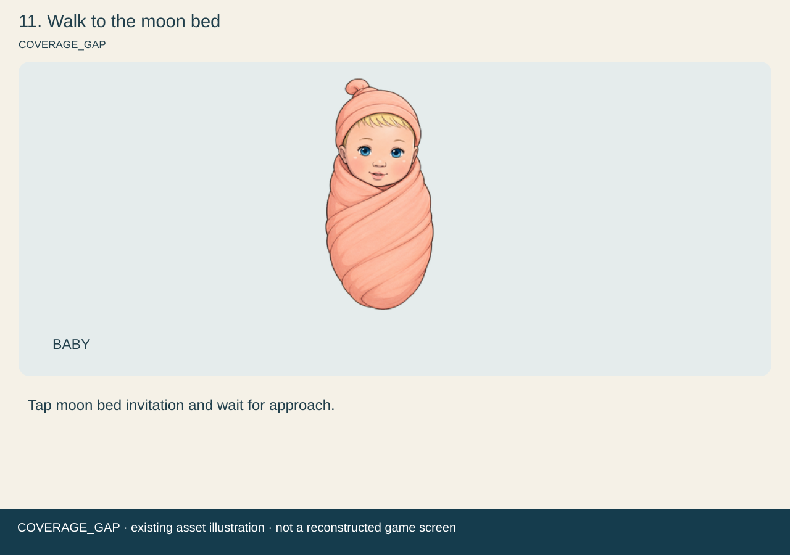
Full-size annotated panel · Untouched source artwork
One finger Tap moon bed invitation and wait for approach. See/hear Downward blanket cue; Faron bedtime instruction. Before BURP complete. After Three blanket slots open, left to right. Roshan/contact Normal route approaches bed. Following historical fixture images bypass that approach/earlier care. Next Start the left blanket. Source prompt / unmodified recording Swipe each blanket down and tuck every baby into bed!
Recording retained locally; not uploaded in this public package.
Prompt is source text, not a verified transcript. Playback path observed in R9; listening acceptance open.
HISTORICAL_NATIVE_FIXTURE 12. Find the first blanket edge Nursery career · Historical R1 BEDTIME start
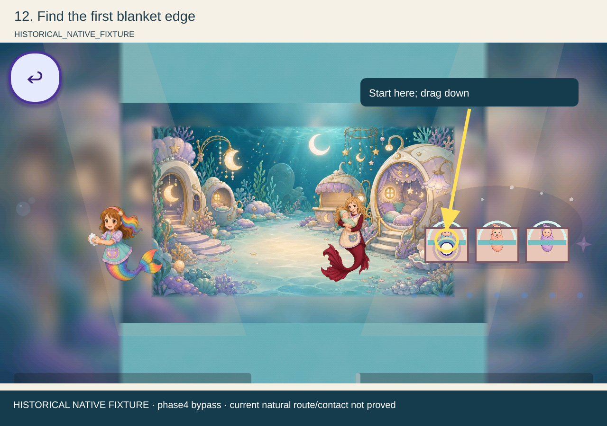
Full-size annotated panel · Untouched screenshot
One finger Press highlighted left blanket zone below baby face. See/hear Ring marks first unfinished blanket. Before 0/3 tucks. After Downward drag can begin; no input earns nothing. Roshan/contact Native image places Roshan apart from cribs; attached tuck acting unproved. Next Drag down. Source prompt / unmodified recording Swipe each blanket down and tuck every baby into bed!
Recording retained locally; not uploaded in this public package.
Prompt is source text, not a verified transcript. Playback path observed in R9; listening acceptance open.
HISTORICAL_NATIVE_FIXTURE 13. Drag down to cover the body Nursery career · Historical R1 partial drag
Full-size annotated panel · Untouched screenshot
One finger Keep the same finger held and drag down; this key is half travel. See/hear Cloth lower edge grows; face stays uncovered. Before First cloth at rest. After Cloth0.5; completed count 0/3. Roshan/contact Object/cloth response only; no attached arm/hand proof. Next Continue to full tuck. Source prompt / unmodified recording Swipe each blanket down and tuck every baby into bed!
Recording retained locally; not uploaded in this public package.
Prompt is source text, not a verified transcript. Playback path observed in R9; listening acceptance open.
HISTORICAL_NATIVE_FIXTURE 14. Retry an unfinished drag Nursery career · Optional R1 release/wrong direction
Full-size annotated panel · Untouched screenshot
One finger If released early or dragged upward, begin again from highlighted blanket. See/hear Rehint, no punitive fail state. Before Partial/wrong-direction input. After Partial cloth resets; no tuck/reward. Completed blankets stay. Roshan/contact This original is cancelled partial; wrong-way original is separately preserved. Next Try a full downward drag. Source prompt / unmodified recording Swipe each blanket down and tuck every baby into bed!
Recording retained locally; not uploaded in this public package.
Prompt is source text, not a verified transcript. Playback path observed in R9; listening acceptance open.
HISTORICAL_NATIVE_FIXTURE 15. First baby tucked Nursery career · Historical R1 first committed
Full-size annotated panel · Untouched screenshot
One finger Complete downward travel, then lift finger. See/hear First blanket stays; middle is invited. Before 0/3 complete. After 1/3. Repeating first earns no duplicate. Roshan/contact Body covered/face clear; Roshan separate, care contact pending. Next Tuck middle. Source prompt / unmodified recording Swipe each blanket down and tuck every baby into bed!
Recording retained locally; not uploaded in this public package.
Prompt is source text, not a verified transcript. Playback path observed in R9; listening acceptance open.
HISTORICAL_NATIVE_FIXTURE 16. Second baby tucked Nursery career · Historical R1 second committed
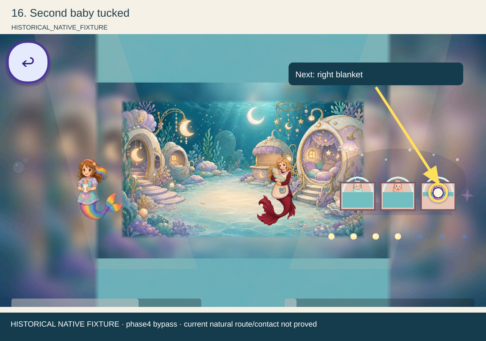
Full-size annotated panel · Untouched screenshot
One finger Press middle blanket zone, drag down, release. See/hear Middle fills; right invited. Before 1/3. After 2/3. Roshan/contact Two covered bodies, not whole-figure hand-to-cloth proof. Next Tuck right. Source prompt / unmodified recording Swipe each blanket down and tuck every baby into bed!
Recording retained locally; not uploaded in this public package.
Prompt is source text, not a verified transcript. Playback path observed in R9; listening acceptance open.
HISTORICAL_NATIVE_FIXTURE 17. All three tucked Nursery career · Historical R1 third committed
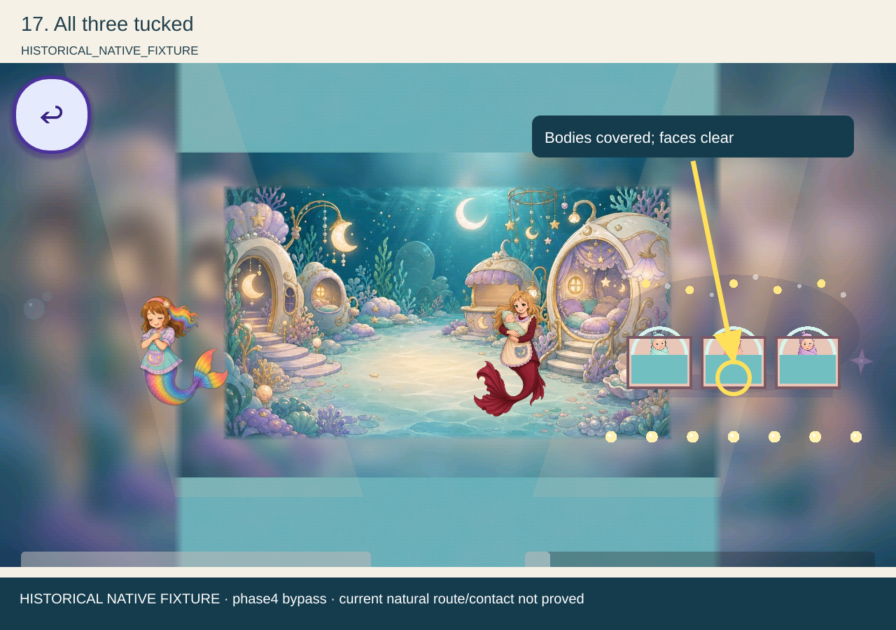
Full-size annotated panel · Untouched screenshot
One finger Press right blanket and drag down fully. See/hear All cloth stays filled; stars/completion feedback. Before 2/3. After 3/3; short readable result hold begins. Roshan/contact Roshan cheer state; selected historical key only. Next Let result settle. Source prompt / unmodified recording Swipe each blanket down and tuck every baby into bed!
Recording retained locally; not uploaded in this public package.
Prompt is source text, not a verified transcript. Playback path observed in R9; listening acceptance open.
HISTORICAL_NATIVE_FIXTURE 18. Read the bedtime result Nursery career · Historical R1 held completion
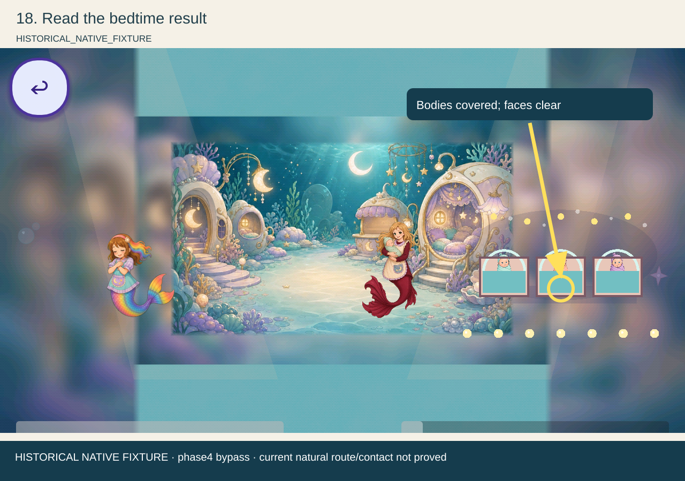
Full-size annotated panel · Untouched screenshot
One finger Release; let automatic hold finish. See/hear Covered bodies, clear faces, restrained stars. Before Last tuck accepted. After All three conserved during hold; wide 1600 original in gallery. Roshan/contact No boxing puff obscures result. Continuity/attached care acting unverified. Next Normal runtime advances. Source prompt / unmodified recording Swipe each blanket down and tuck every baby into bed!
Recording retained locally; not uploaded in this public package.
Prompt is source text, not a verified transcript. Playback path observed in R9; listening acceptance open.
HISTORICAL_NATIVE_FIXTURE 19. Earn the career result Nursery career · R1 historical post-hold / R9 headless completion
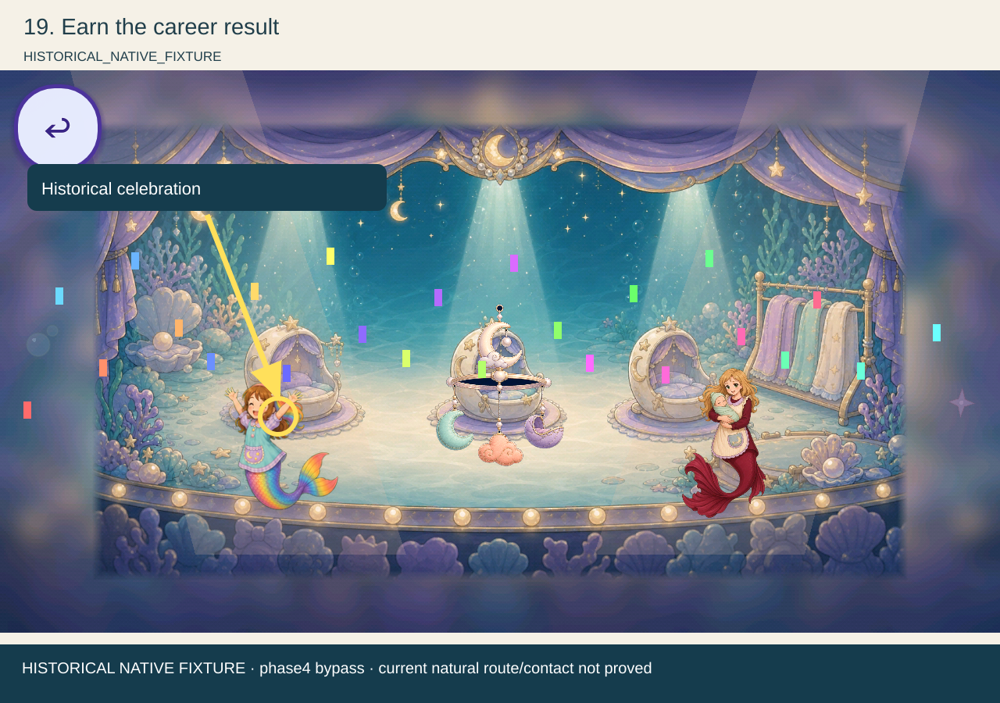
Full-size annotated panel · Untouched screenshot
One finger No extra confirm; completion advances after hold. See/hear Cheer/celebration, saved star and reward. Before Five phases earned by actual input in R9. After Ordinary first completion +3 pearls/bit 15, replay +1. Entire live Opera set completion can separately add 50 pearls/showtime. Roshan/contact R1 shows celebration from terminal fixture. R9 proves five-phase headless path separately; neither proves current natural native playback. Next Automatic Bubble Bath return. COVERAGE_GAP 20. Return, save and replay Nursery career · Castle Bubble Bath
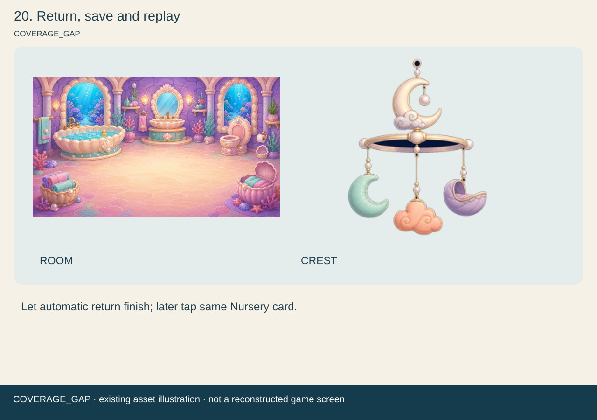
Full-size annotated panel · Untouched source artwork
One finger Let automatic return finish; later tap same Nursery card. See/hear Same room/route and earned star; native return/replay image missing. Before Career accepted. After R9 disk save retained star/reward, cleared only Nursery checkpoint; fresh-process replay +1. Roshan/contact Normal route/layer handoff has source/state evidence, no current native transition. Next Replay the five phases. COVERAGE_GAP 21. Leave mid-care and resume Nursery career · Back/focus/save variant
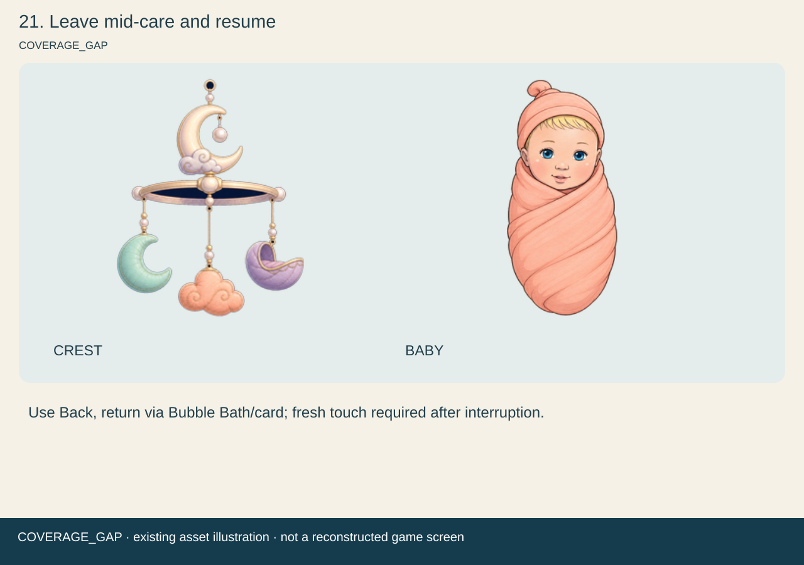
Full-size annotated panel · Untouched source artwork
One finger Use Back, return via Bubble Bath/card; fresh touch required after interruption. See/hear Same phase invitation; no ghost held finger. Before Meaningful partial care accepted. After R11 Back/disk/fresh-load preserved wash 0.85/3.4, two caught IDs, feed 1/4, two pats or one completed tuck. Unfinished drag resets. Roshan/contact State evidence only. Native pause/focus-loss/resume/device review open. Next Finish remaining care. COVERAGE_GAP 22. Meet Faron for Dolls Separate Faron Dolls · Separate in-world friend route, where available
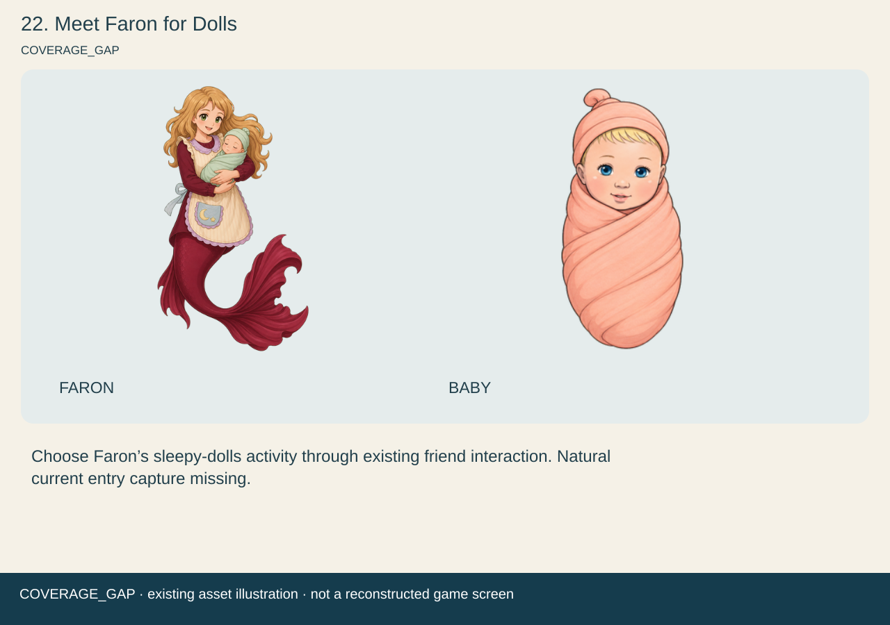
Full-size annotated panel · Untouched source artwork
One finger Choose Faron’s sleepy-dolls activity through existing friend interaction. Natural current entry capture missing. See/hear Faron picture/generic greeting; exact spoken catch-three objective missing. Before Different activity, not Nursery 15/birthday/practice. After Bounded Canvas stage/three pips opens over Nursery tiles. Roshan/contact Selected Roshan skin is used, not this illustrative career costume. Exact-skin/natural-entry native proof absent. Next Catch three. COVERAGE_GAP 23. Catch three with the sling Separate Faron Dolls · Separate Dolls Canvas
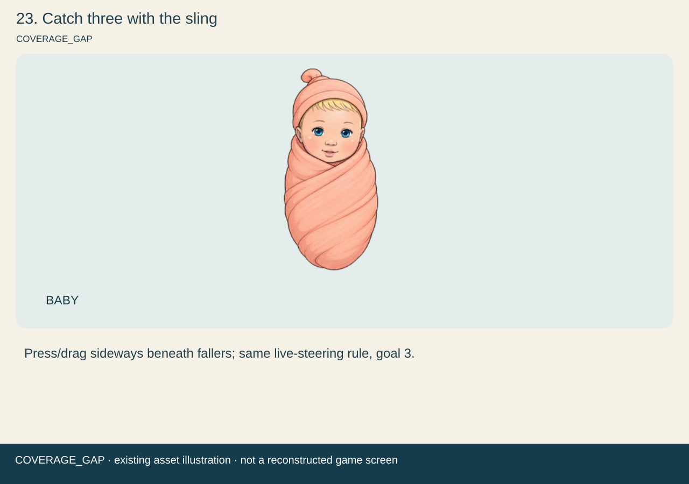
Full-size annotated panel · Untouched source artwork
One finger Press/drag sideways beneath fallers; same live-steering rule, goal 3. See/hear Three pips, U-shaped focus halo, rounded sling/procedural mat. Before 0/3. After Real catches progress; misses never end activity. Roshan/contact Selected-skin Roshan follows behind sling/babies. Opera placeholder cradle/pillow textures are not loaded. Next Fill all three pips. COVERAGE_GAP 24. Dolls finish and replay Separate Faron Dolls · Separate Dolls result/friend return
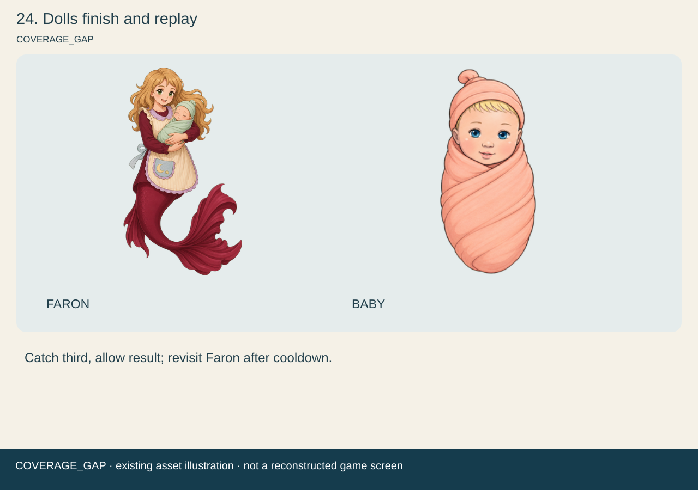
Full-size annotated panel · Untouched source artwork
One finger Catch third, allow result; revisit Faron after cooldown. See/hear Source UI says all cozy; exact catch-three instruction recording still missing. Before 3 accepted catches. After Source _end_game awards medal/first friend trophy-reward, cleans up/writes save. Native reward/return/re-entry/load missing. Roshan/contact Sibling source path, not Opera star. Dolls partial progress is not the Opera care checkpoint schema. Next Return to ordinary friend play; route/device verification remains. Variants and evidence Route Status / evidence limits Bubble Bath act 15 Normal Nursery freeplay after Chapter2 story completion. R9 declares unlocked startup; does not prove fresh-save prerequisite. Opera Hall / practice Room routes acts 2, 13, 8, not Nursery. No Nursery practice entry is invented. Birthday Authoritative eight-career sequence 6, 0, 3, 10, 2, 13, 11, 1 excludes Nursery15. Faron Dolls Separate three-catch friend activity, selected skin/procedural sling/mat. Natural entry/objective voice/reward-return-replay visuals missing. Replay / interruption / aspect R9 first 1280/fresh 1600 replay; R11 partial Back/save/load; R1 historical 1600 bedtime comparison. Distinct evidence lanes.
R9: 26 first-play +29 fresh-replay checks after declared freeplay startup; real viewport input/automatic ticks, +3/+1, bit15, Bubble Bath return and disk save. R11: 108 partial-care Back/save/load checks. R1: historical selected native BEDTIME keys. Current natural native full route/acting/contact, fresh-save unlock, listening, independent per-item 4.6, actual M11 Mobile/Speedy performance, child and owner acceptance remain open.
Source hashes and availability · Steps · Media provenance · R9 · R11 · Capture fixture · Scope
Untouched originals Labels/arrows are separate copies. Original pixels/audio are unchanged; their acceptance scopes remain limited.
originals/assets/hall.png · [1024, 576] · SHA7962c3256087
originals/assets/room.png · [1024, 576] · SHA3ecd80b1be84
originals/assets/crest.png · [256, 256] · SHA718ccbdf8fde
originals/assets/roshan.png · [512, 512] · SHA453f770e57cf
originals/assets/faron.png · [512, 512] · SHAb2e326c2c52b
originals/assets/baby.png · [320, 320] · SHA73148e42f8e7
originals/assets/cradle.png · [256, 256] · SHA9cacbc76cb57
originals/assets/pillows.png · [1024, 160] · SHA2a1ad09b777d
originals/assets/bottle.png · [256, 256] · SHA5b05584e0c0b
originals/captures/00_start.png · [1280, 720] · SHA33be9c520ff8
originals/captures/02_partial.png · [1280, 720] · SHAb542157858f3
originals/captures/03_cancelled.png · [1280, 720] · SHA5cbfa79f6ba6
originals/captures/04_wrong_way.png · [1280, 720] · SHA30956ac0c0c9
originals/captures/07_blanket0_committed.png · [1280, 720] · SHAbd5cb983e04f
originals/captures/10_blanket1_committed.png · [1280, 720] · SHAb429965057e0
originals/captures/13_blanket2_committed.png · [1280, 720] · SHA74213db4db1b
originals/captures/14_held_completion.png · [1280, 720] · SHA0cbf38923ec7
originals/captures/15_post_hold.png · [1280, 720] · SHA47132cae476a
originals/captures/1600_held_completion.png · [1600, 720] · SHAf1ecac40fcd4